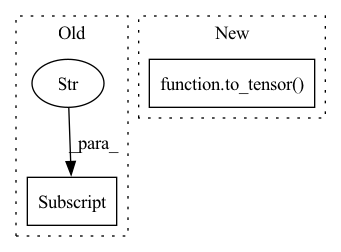

Pattern ID :24676
Before Change
data["gt_bboxes_ignore"] = DC(gt_bboxes_ignore)
if self.with_mask:
data["gt_mask_polys"] = DC(gt_mask_polys)
data["gt_poly_lens"] = DC(gt_poly_lens)
data["num_polys_per_mask"] = DC(num_polys_per_mask)
return data
After Change
img_meta=DC(img_meta, cpu_only=True),
gt_bboxes=DC(to_tensor(gt_bboxes)))
if self.proposals is not None:
data["proposals"] = DC(to_tensor( proposals) )
if self.with_label:
data["gt_labels"] = DC(to_tensor(gt_labels))
if self.with_crowd:In pattern: SUPERPATTERN
Frequency: 4
Non-data size: 2
Instances Fragment ID: 76514319
Project Name: wxinlong/solo
Commit Name: 678f9334b517134ed11e91f5ada7946fe2aba400
Time: 2018-09-23
Author: chenkaidev@gmail.com
File Name: mmdet/datasets/coco.py
M Class Name: CocoDataset
N Class Name: CocoDataset
M Method Name: __getitem__(2)
N Method Name: __getitem__(2)
M Parent Class: Dataset
N Parent Class: Dataset
M File Name: mmdet/datasets/coco.py
N File Name: mmdet/datasets/coco.py
M Start Line: 204
M End Line: 250
N Start Line: 205
N End Line: 252
Before Change
training_context["losses"]["cutmix_loss"] = []
training_context["current_loss"] = training_context["current_loss"] + this_loss *self.loss_weight
if training_context["is_collect_data"]:
training_context["losses"]["cutmix_loss"] .append(float(to_numpy(this_loss) * self.loss_weight))
After Change
//x[:, bbx1:bbx2, bby1:bby2, :] = x1[:, bbx1:bbx2, bby1:bby2,:]
// adjust lambda to exactly match pixel ratio
lam = 1 - ((bbx2 - bbx1) * (bby2 - bby1) / (x.shape[2] * x.shape[1]))
pred = model(to_tensor( x, requires_grad=True) )
loss1=self.loss_criterion(pred, y_a)
loss2=self.loss_criterion(pred, y_b)
this_loss = lam *loss1 + (1 - lam) * loss2 Fragment ID: 76514318
Project Name: allanyiin/trident
Commit Name: a961886325f288a00b1d81d66539d8b20cf21d07
Time: 2020-10-20
Author: allan@asiaminer.com.tw
File Name: trident/callbacks/regularization_callbacks.py
M Class Name: CutMixCallback
N Class Name: CutMixCallback
M Method Name: on_loss_calculation_end(2)
N Method Name: on_loss_calculation_end(2)
M Parent Class: RegularizationCallbacksBase
N Parent Class: RegularizationCallbacksBase
M File Name: trident/callbacks/regularization_callbacks.py
N File Name: trident/callbacks/regularization_callbacks.py
M Start Line: 169
M End Line: 208
N Start Line: 167
N End Line: 205
Before Change
self.std_mu = self.kwargs["std_mu"]
self.tau = self.kwargs["tau"]
self.learn_mu = self.kwargs["learn_mu"]
if not torch.is_tensor(self.kwargs["r"] ):
self.r = torch.tensor(self.kwargs["r"], dtype=torch.float32, device=self._device)
else:
self.r = self.kwargs["r"]After Change
self.mu = self.mu.to(dtype=torch.float32)
self.mean_mu = self.kwargs["mean_mu"]
self.std_mu = self.kwargs["std_mu"]
self.tau = to_tensor( self.kwargs["tau"]) .to(self.device)
self.learn_tau = self.kwargs["tau"]
self.learn_mu = self.kwargs["learn_mu"]
self.r_sqrt = torch.sqrt(to_tensor(self.kwargs["r"], dtype=torch.float32)).to(self.device) Fragment ID: 76514314
Project Name: neurotorch/neurotorch
Commit Name: f1f3042b8458e0aa5101b1a28668a53850ee5df2
Time: 2022-08-04
Author: 93488840+AnthoDrouin@users.noreply.github.com
File Name: src/neurotorch/modules/layers.py
M Class Name: WilsonCowanLayer
N Class Name: WilsonCowanLayer
M Method Name: __init__(6)
N Method Name: __init__(6)
M Parent Class: BaseNeuronsLayer
N Parent Class: BaseNeuronsLayer
M File Name: src/neurotorch/modules/layers.py
N File Name: src/neurotorch/modules/layers.py
M Start Line: 859
M End Line: 869
N Start Line: 860
N End Line: 863
Before Change
)
self.std_weight = self.kwargs["std_weight"]
if not torch.is_tensor(self.kwargs["mu"]):
self.mu = torch.tensor(self.kwargs["mu"] , dtype=torch.float32, device=self.device)
else:
self.mu = self.kwargs["mu"]
if self.mu.device != self._device:After Change
**kwargs
)
self.std_weight = self.kwargs["std_weight"]
self.mu = to_tensor( self.kwargs["mu"]) .to(self.device)
self.mean_mu = self.kwargs["mean_mu"]
self.std_mu = self.kwargs["std_mu"]
self.learn_mu = self.kwargs["learn_mu"] Fragment ID: 76514312
Project Name: neurotorch/neurotorch
Commit Name: 31437ad14fc1202da4089bd81199370020f0e1c0
Time: 2022-08-04
Author: 93488840+AnthoDrouin@users.noreply.github.com
File Name: src/neurotorch/modules/layers.py
M Class Name: WilsonCowanLayer
N Class Name: WilsonCowanLayer
M Method Name: __init__(6)
N Method Name: __init__(6)
M Parent Class: BaseNeuronsLayer
N Parent Class: BaseNeuronsLayer
M File Name: src/neurotorch/modules/layers.py
N File Name: src/neurotorch/modules/layers.py
M Start Line: 850
M End Line: 862
N Start Line: 850
N End Line: 853